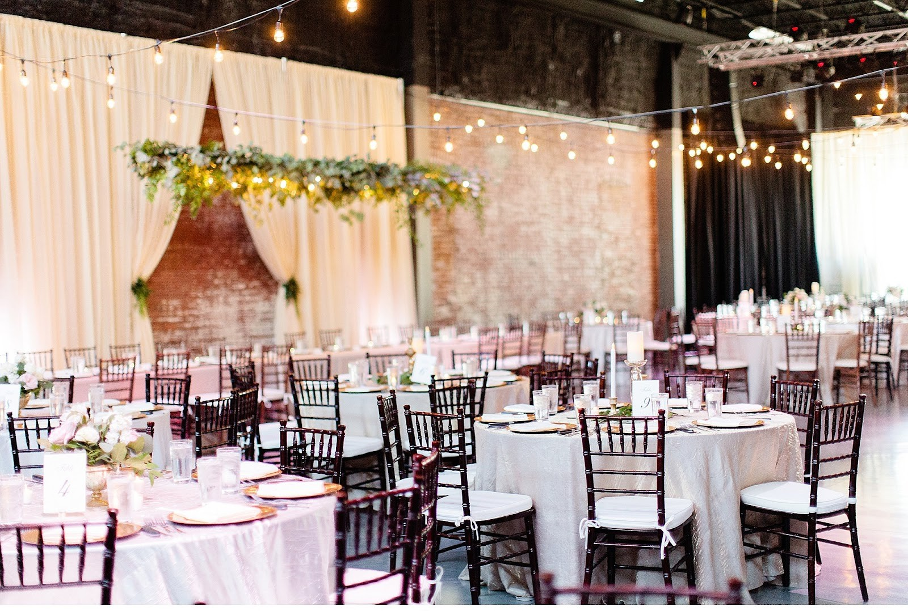
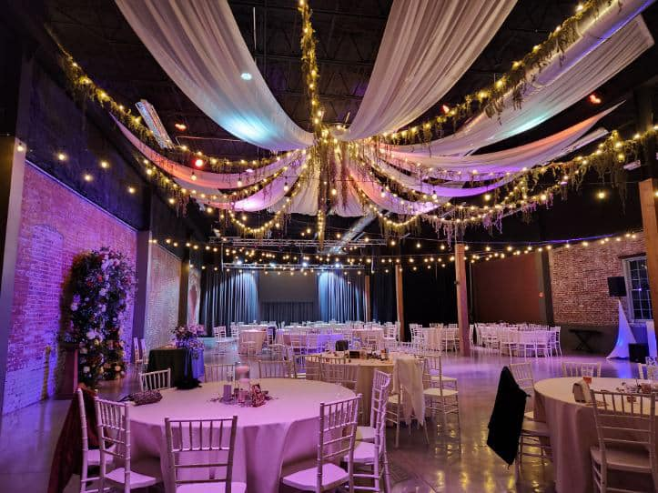
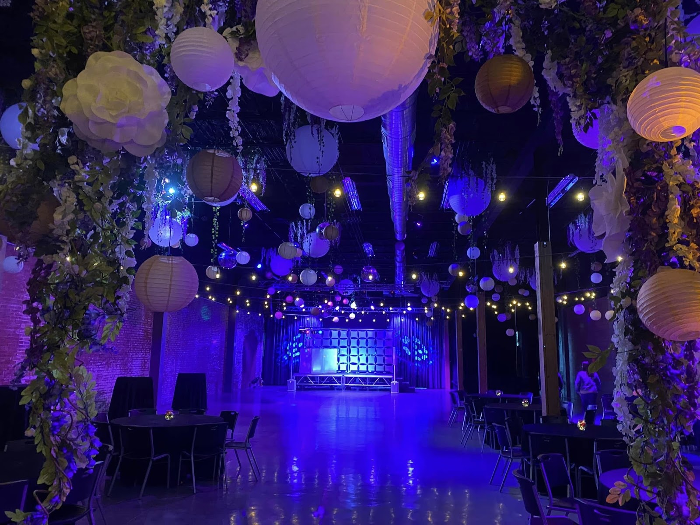
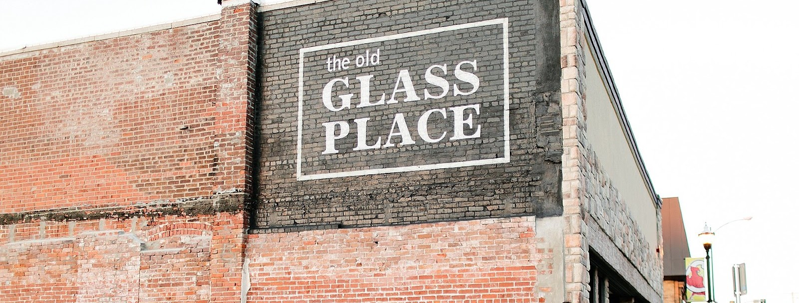

The Old Glass Place is a wedding and event venue in downtown Springfield, Missouri. The building once housed an auto dealership, then a Pepsi bottling plant, then a glass company. Today it is an event space for weddings, receptions, proms, concerts, fundraisers, banquets and meetings.
The building
A downtown Springfield building with three working lives before it became a venue.
- 1908 and 1914
The building rises in downtown Springfield.
- Auto dealership
The building serves as an auto dealership.
- Pepsi bottling plant
The building becomes a Pepsi bottling plant.
- Glass company
The building becomes a glass company.
- Today
Restored as an event venue, with the brick, the ceilings and the windows kept in place.
The building was purchased by the Missouri State University Foundation in 2023 and is managed by 425 Downtown LLC. It remains available to the public.

Weddings
Ceremony and reception in one historic room, with a bridal suite for the wedding party and day-of lighting and draping handled by the venue.

Receptions
Round tables under string lights and draped ceilings, with the in-house bar serving the room and setup and cleanup handled by the venue.

Concerts and gatherings
A stage with lighting and sound in the ballroom, with the dance floor below and the room's high ceilings overhead.

Call to ask
Questions about a date? Call (417) 501-8035.
Call (417) 501-8035